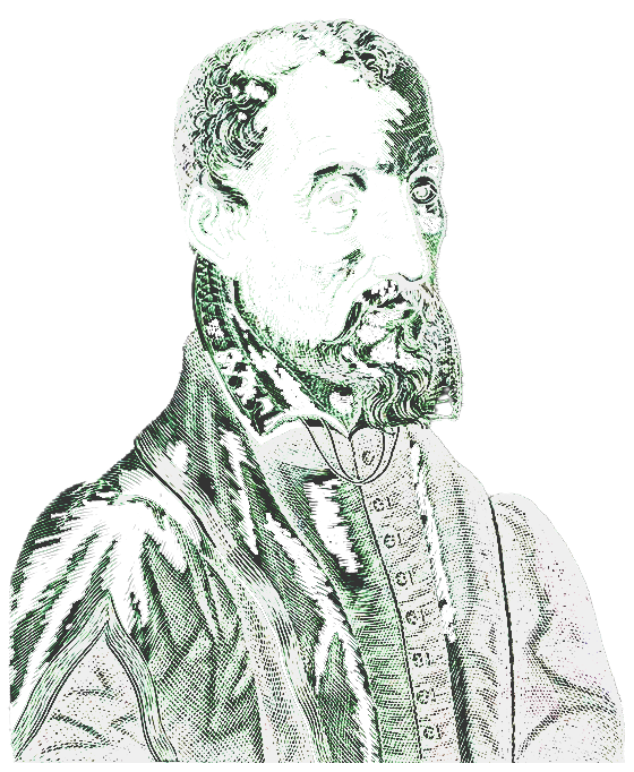

A 6-episode digital journey to the Plantin Press presents:
“A Journey Through Plantin's Printing Techniques”

Labore et Constantia
Christophe Plantin was a French Renaissance humanist and a renowned book printer and
publisher. He established one of
the most influential publishing houses of his time in Antwerp, transforming the city into a leading center of
European
book production.
Plantin's legacy extends far beyond his impressive body of work. His printing house, the Plantin Press,
continued to
operate for generations, and today, the Plantin-Moretus Museum in Antwerp, a UNESCO World
Heritage Site, stands as a
testament to his enduring contribution to the world of printing and publishing.
Flow of history
The story starts here...
start
Plantin was born in Saint-Avertin, a hamlet in the region of
Tours in France
1520
Marries Jeanne Rivière,
Settles in Antwerp and initially earns his living as a bookbinder and leatherworker.
1545
Establishes his own print shop and becomes an accomplished printer.
1555
Faces persecution due to the discovery of a Calvinist pamphlet in his print shop. Flees
to Paris for a year
and
a half
before his name is cleared.
1562
Returns to Antwerp, where his friends have protected his property from government
seizure.
1563
Receives financial support from Philip II of Spain for a scholarly edition of the Bible.
1567
Awarded the honorary title of "Arch-Printer to the King".
1570
Completes the "Biblia Regia" (King's Bible), also known as the Plantin Polyglot, a
monumental multilingual
edition of
the Bible together with Claude Garamond.
1573
The Spanish Fury devastates Antwerp, disrupting his business. Establishes a branch of
his firm in Paris.
1576
Relocates to Leiden, Netherlands, where the newly founded university presents new
business opportunities.
His
sons-in-law take over the management of the Antwerp branch.
1583
Returns to Antwerp. Franciscus Raphelengius takes over the Leiden branch.
1586
Passes away, leaving behind a thriving publishing house and a lasting legacy in the
world of printing.
1589
The Plantin-Moretus Museum in Antwerp, a UNESCO World Heritage Site, stands as a
testament to his enduring
contribution
to the world of printing and publishing.
2025
The Art of Typography
Plantin championed the use of high-quality typefaces, recognizing their crucial role in enhancing readability
and the
overall aesthetic appeal of his books. He drew inspiration from classical Roman inscriptions and Renaissance
humanism,
striving for typefaces that were both elegant and legible.
Typing Quest:
Try to guess and type the name of the group of typefaces which named for sixteenth-century engraver. Plantin
used it in
his production of famous Polyglot Bible.
Tip: Use colourful punches
?
?
?
?
?
?
?
?
And the answer is...
Plantin invested heavily in the creation of new typefaces. Skilled artisans, called punchcutters,
meticulously carved
the shape of each letter into a steel punch. This punch was then used to create a matrix, which served as the
mold for
casting individual letters of type. The Plantin Polyglot Bible, with its multiple languages (Hebrew, Greek,
Latin, and
Aramaic), demanded a diverse range of typefaces.
For this ambitious project, Plantin collaborated with renowned French type designer Claude
Garamond. Garamond provided
the steel punches for many of the characters used in the Bible, ensuring the highest quality and aesthetic
standards for
this monumental work.
A Master of Craftsmanship
Plantin was celebrated for his meticulous attention to detail, producing books of exceptional quality with
exquisite
typography, careful editing, and stunning illustrations. He employed some of the most talented artists of his
time,
including the renowned engraver, Johannes Wierix.
Wierix brought a new level of artistry to Plantin's books. His engravings were characterized by intricate
detail,
dynamic composition, and expressive power. He mastered the technique of copper engraving, which involved
carefully
carving intricate patterns into metal plates.
Engraving techniques
Engraver made his images using an impression on paper (in a mirror form) from a printing plate — a "board"
made of metal
with an in-depth (engraved) pattern applied to such a form. With a hardened steel tool called a drill or
engraver to
carve a pattern on a surface.
The greatest merit of his publishing house is also the use of copper engravings and the
spread of this method in Holland
and other European countries.
In Italy, copper engraving has been known since the 50s of the XVI century. But Plantin's prints were better:
featuring
Wierix's engravings, became renowned for their high quality and artistic merit, contributing
to the spread of this
technique throughout Europe.
Engraving tools
( click on tool to know more )
Woodblocks
In contrast to copper engraving, woodcut involves applying contours and strokes with ink,
and then cutting off each
stroke on both sides to a depth of 2-8 mm with a knife. In between, the wood was selected with a chisel.
Woodcuts were
typically created on blocks of softer woods like pear or linden, with the grain direction often influencing
the
direction of the lines. After carving, the board was rolled up with paint and the impression was transferred
to paper.
The Plantin-Moretus Museum has an extraordinary collection of 14,000 woodblocks. 14,000
examples of true craftmanship,
drawings masterly cut in wood.
Woodblock workshop
Draw the picture for your woodblock inside the canvas.
Your drawing will be engraved with our special tool.
Watch your design becoming the piece of printed art.
The Legacy of Plantin
Christophe Plantin's dedication to quality, innovation, and the dissemination of knowledge established a high
standard
for book production that continues to influence printers and publishers even today. The Plantin-Moretus
Museum, a UNESCO
World Heritage Site, stands as a testament to his enduring legacy, offering a fascinating glimpse into the world
of
16th-century printing and publishing.